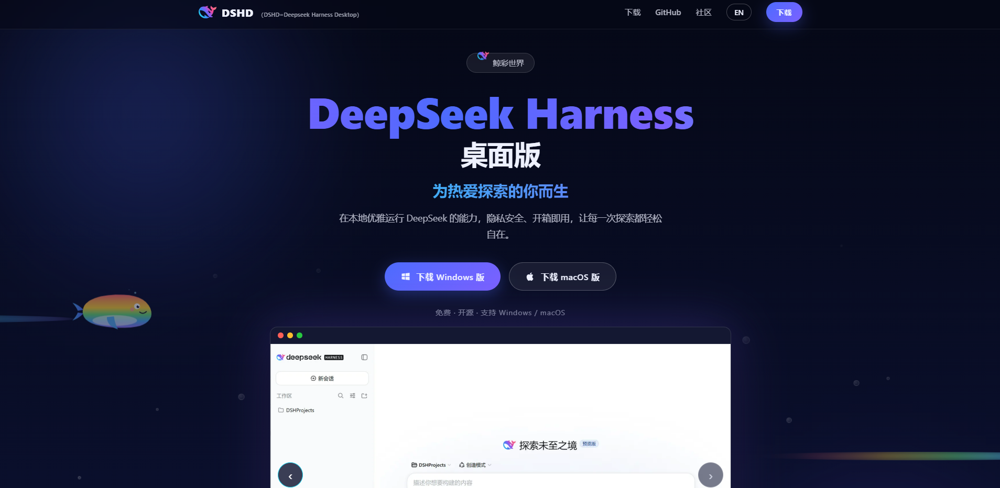
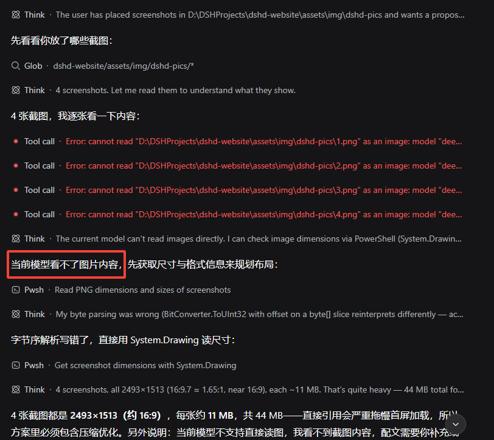

Day16 · 2026-08-16 · 挑战30天自学Web出海
Deepseek Harness刚刚发布开发者预览版，有朋友想快速体验一下，但不会安装或者嫌命令行太麻烦，为了让没有技术背景或者怕麻烦的朋友们体验到dsh，我给大家准备了一个deepseek harness的桌面版——鲸彩世界，简称DSHD。下载后双击安装即可。
⬇ 下载地址
https://weichi-ai.github.io/dshd/

你或许用过 ChatGPT、DeepSeek、豆包——和它们聊天很爽，但它们有个共同点：只动嘴，不动手。问它"帮我整理这个文件夹"，它只能说"你打开文件夹，选中文件，右键……"——最后动手的还是你。
DeepSeek Harness（简称 dsh）不一样：它不光会回答，还能真的在你的电脑上干活——读你的文件、改你的文件、帮你运行命令。
| 聊天软件（ChatGPT / DeepSeek / 豆包） | DeepSeek Harness | |
|---|---|---|
| 能干什么 | 只回答你 | 读文件、改文件、运行命令、管理任务 |
| 工作地点 | 云端网页 | 你自己电脑上的文件夹 |
| 要不要你动手 | 要，它只给建议 | 不用，它自己动手 |
| 重要操作 | — | 要你点头同意（审批） |
| 能加功能吗 | 不能 | 插件随便装 |
用一句话记住：
"
ChatGPT 是"顾问"，Harness 是"员工"。顾问只会说，员工真的会干活。
PART
场景一：整理文件夹。 你对它说"把这个文件夹里的图片按月份分好类"，它真的会建子文件夹、移动文件，干完告诉你结果。
场景二：改文档。 你说"把这份 Markdown 里所有标题改成三级"，它直接改好，你打开看就行。
场景三：跑任务。 你说"帮我看看这个项目用的什么技术栈"，它自己翻文件、自己总结，把结论端到你面前。
PART
英文里 harness 是"马具、缰绳"。给马套上缰绳，马才能按你的方向拉车。给 AI 套上 harness，AI 才能按你的指令干活——这就是这个名字的意思。
"
💡 记住一个词就够：dsh = 能动手的 AI。后面的章节全是教你怎么用它、怎么给它加本事。
说人话：以前 AI 是只动嘴的顾问，现在它是能动手的员工——你要学的，就是怎么当这个"老板"。
PART
一句话：适合所有想让 AI 真给自己干活的人。 但具体分几类：
| 人群 | 适合程度 | 怎么用 |
|---|---|---|
| 完全没写过代码的小白 | ✅ 很适合 | 让 AI 整理文件夹、改文档、总结资料——本手册就是为你写的 |
| 会一点编程的开发者 | ✅ 非常合适 | 让 AI 写代码、跑测试、查 bug，你负责审 |
| 内容创作者 / 自媒体 | ✅ 适合 | 让 AI 批量处理素材、生成草稿、管理文件 |
| 想把 AI 变成产品的人 | ✅ 最合适 | dsh 的插件机制 = 可以把你的流程做成工具分发（进阶） |
| 只想聊天的用户 | ❌ 不适合 | 用 ChatGPT / DeepSeek 网页版就够了，不需要装这个 |
"
💡 判断标准就一条：你想不想让 AI 碰你电脑上的文件？ 想 → 用它；不想 → 用聊天软件。
PART
市面上"能动手的 AI"还有几款，很多人会问它们和 dsh 有什么区别。一句话版：
"
Codex / Claude Code 是"AI 程序员"，dsh 是"AI 员工的办公室"——如果说前者只能让 AI 写代码，后者则能让 AI 干任何事，还能给它装各种技能。
| 对比项 | DeepSeek Harness | OpenAI Codex | Claude Code | WorkBuddy |
|---|---|---|---|---|
| 谁家的 | DeepSeek（开源） | OpenAI | Anthropic | 商业产品（你电脑上装的） |
| 核心定位 | 通用 Agent 框架，"一切皆插件" | 编码助手（写代码为主） | 编码助手（终端里写代码） | 桌面 AI 助手 |
| 能干嘛 | 读/改文件、跑命令、装插件扩展任意能力 | 写代码、改代码、跑测试 | 写代码、改代码、跑命令 | 桌面操作、任务辅助 |
| 插件生态 | ✅ 核心卖点，官方定位"Everything is a Plugin" | 有 MCP 但以代码场景为主 | 有 MCP 但以代码场景为主 | 有限 |
| 适合谁 | 想做通用自动化的人（不限于代码） | 主要写代码的开发者 | 主要写代码的开发者 | 办公人群 |
| 学习门槛 | 中低（要装 Node.js，但鲸彩世界帮你解决了，就像安装workbuddy一样） | 低（登录即用） | 中（终端操作） | 低 |
| 开源 | ✅ 完全开源（GitHub） | ❌ | ❌ | ❌ |
怎么选（实用建议）：
**你只想让 AI 帮忙写代码** → Codex 或 Claude Code 上手最快，不用折腾
**你想让 AI 干各种杂活（整理文件/改文档/批处理）+ 以后想加自定义技能** → dsh
**你已经装了 WorkBuddy 且够用** → 先用着，等需要"能装插件 + 开源可控"时再换 dsh
**你好奇/想学习** → dsh 全开源，代码随便看，社区在 Discord
"
⚠️ 诚实提醒：dsh 目前是 0.1.0-rc 版（开发者预览），迭代很快、可能有破坏性更新；Codex / Claude Code 更成熟稳定。小白建议：想尝鲜用 dsh，想要稳定主力干活可以先从成熟工具开始。但 dsh 的"插件化 + 开源"方向，是它最大的长期优势。
目前我浅浅使用deepseek harness的一些感受
使用deepseek harness+deepseek flash/pro，整体还是很丝滑的，作为一个刚面世的开发预览版agent工具，在tool调用和任务的loop表现上可圈可点。
灵活度高，deepseek的理念就是薄内核，厚插件，一切皆可插件，快速开发插件，管理插件。我就用纯deepseek全家桶体验了一把插件的快速开发，比如电商套图生成插件，github插件，dsh皮肤插件。
开源免费，不必为了某些agent，用尽一切魔法，还要承受额度不够用的焦虑。
当然，还是要正视与top agent差距，目前我使用的过程中发现两个主要问题
给出的部分方案不够智能，比如我让他生成安装包，没有用NSIS，而是自己去构建代码实现，所以错误率会上升，效率较慢，执行任务时间很长，同时也会多花费token，在我的提醒下改用NSIS，很快就完成了打包任务。
deepseek的模型是单模态的，不支持图像识别与画面理解，可能在很多场景就会吃亏一点，靠盲猜，或者要你告诉它这个画面大概是什么内容，这样的话，在图像应用场景例如computer use的体验就会大幅下降，需要换成其他模型处理。我注意到目前dsh还没有computer use插件，可能也是这个原因，需要借助其他模型来做，computer use通过vibe coding的模式估计也比较难实现，我还没尝试，改天可以试下。

如果你也对Agent感兴趣，欢迎使用deepseek harness（鲸彩世界），让它成为你工作、学习、生活的小帮手，也欢迎你加入鲸彩世界项目的开发维护和升级。
我是未迟，正在挑战 30 天自学 Web 出海。
如果你觉得今天这篇有收获，欢迎点赞、在看、转发三连，我们下篇见